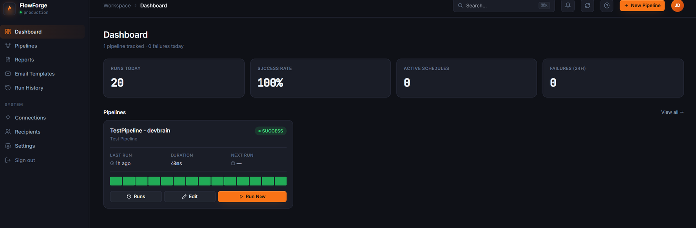
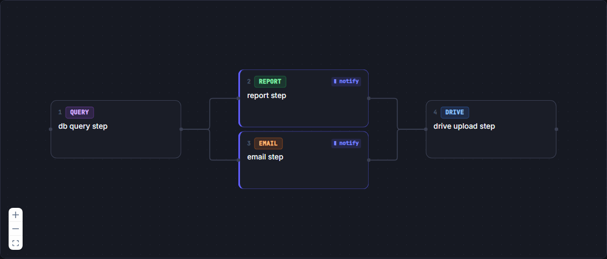

Telecom revenue assurance, in development
Find the revenue your network delivered and your billing never charged.
FlowForge reconciles your CRM, billing and network registers on a schedule and reports the gaps: active subscribers nobody billed, charges that do not match the plan. The orchestration engine underneath is shipping and runs on your own servers. The telecom layer is being built on top of it.
- Extract CRM activesdb_query · Oraclerows → staging
- CRM vs billingreconcile · tokenize_keysorphans found
- Build Excel reportreport · xlsxleakage_{{ current_month }}.xlsx
- Email finance teamemail · run_if: orphans > 0Drive link if > 10 MB
The Muscle, shipping today
Everything the deterministic core does today.
Each item is a step type you add to a pipeline in the browser and wire together, with no YAML. All of it runs in your environment, and none of it uses AI.
Query databases, call packages
- Call PostgreSQL procedures and Oracle packages (
package.procedure) with templated parameters - Run a query and write the result to a table: replace, append or truncate-insert
- Eight database types: PostgreSQL, Oracle, MySQL/MariaDB, SQL Server, ODBC, Snowflake, BigQuery, Redshift
Load data in
- Bulk-load daily file drops by name prefix (such as
SUBS_20260522.csv) using PostgreSQLCOPYor Oracle SQL*Loader - Load a file or a query result into any table, creating it if missing, with column mapping
- Date, timestamp and delta variables for incremental loads
Reconcile two systems
- Compare keyed results from two databases: orphans on either side, and values that differ beyond a tolerance
- Each query runs inside its own database; the step returns counts and a capped sample
- Sampled subscriber keys are replaced by keyed tokens before they reach a report, email or run log
Generate files
- Excel (with an optional template and sheet name), CSV, PDF and JSON, straight from a SQL query
- The same formats from data captured earlier in the run, such as SSH command output
- File names built from variables, such as
report_{{ current_month }}.xlsx; remote command output can be saved as a text file
Email and notify
- Send over Gmail, Microsoft 365, SMTP, SendGrid, SES or Mailgun, with recipient groups, To/CC/BCC and HTML templates
- Smart attachments: a file over your size limit is uploaded and replaced by a share link
- Slack, Teams and Telegram messages, including failure-only alerts
Move files and run remote commands
- SFTP download and upload, by password or private key, with glob patterns and whole directories
- Upload to Google Drive, OneDrive/SharePoint, Amazon S3 or Azure Blob
- Run a command on a server over SSH and keep its output as a variable or a file
Health reports
- Database health as Excel or CSV: sessions and cache hit ratio, plus replication lag (PostgreSQL), tablespaces over 80% (Oracle) or connected threads (MySQL)
- Server health over SSH: load average, memory, disk usage and top processes
- Run history flags statistical outliers (over 2σ) in step row counts and durations
Schedule and control
- Cron schedules you can pause without deleting the pipeline, with run history and per-step logs
- Conditional steps, retries with backoff, parallel groups, and a dependency graph drawn on the canvas
- Trigger over an API token, post to a webhook on failure, and add Celery workers when you need them
Secure and manage
- Admin, editor and viewer roles, project-level access, MFA, and Google, Microsoft or SAML single sign-on
- Stored credentials encrypted with AES-256-GCM; webhook and notification URLs checked against private-network targets
- Hash-chained audit log, YAML import and export, pipeline clone, and plugins for your own step types
Step names are shown as code. The complete reference, with every option, is docs/step-types.md.
The product
A web UI for building and watching pipelines.
Screenshots from a running instance, using a plain test pipeline. They show the generic engine, not the telecom audit.


Worked example
The orphaned-subscription audit, step by step.
Two queries, one per system, each run inside its own database. FlowForge compares the keys and returns counts plus a capped, pseudonymised sample. It is a ready-made template in examples/.
The step (simplified from the template)
step_type: reconcile config: left_connection_id: crm left_query: >- SELECT msisdn, plan_price FROM crm_subscribers WHERE status = 'active' AND activated_at < now() - interval '48 hours' right_connection_id: billing right_query: >- SELECT msisdn, monthly_charge FROM billing_accounts compare: values tolerance: 0.005 sample_size: 20 tokenize_keys: true
The 48-hour window keeps subscribers CRM activated recently, who are legitimately not billed yet, from being flagged.
What comes back
| Check | Finding | Count |
|---|---|---|
| CRM vs billing | Active, not billed | 2,000 |
| CRM vs billing | Charge differs from plan | 2,000 |
| CRM vs HLR | Active, not provisioned | 2,000 |
| CRM vs HLR | Active in HLR, not in CRM | 2,000 |
Synthetic data: 100,000 subscribers with a planted 2% anomaly rate, both audits finished in about one second on one laptop. Every planted case was found and nothing else was flagged. The sampled keys come back as tokens such as tk_msisdn_9f3a…c1e0, not phone numbers. This has not been run on an operator’s data.
Architecture
The Brain is designed never to see your data, only a small tokenised summary.
The Muscle runs against your databases and keeps everything sensitive. The Brain is a separate, optional service that Core will be able to send an evidence package to. These are the rules it is being built to; a pipeline behaves the same with or without it.
Inside your infrastructure · self-hosted
CRM, billing, HLR
Subscriber records and credentials stay here.
Runs the work
Queries, reconciliation, reports, alerts. Holds the credentials and the token key.
Reduce, then tokenise
Group into signatures, keep counts and a capped sample, replace identifiers with tokens.
Outside · separate service, not built yet
Suggests root causes
Receives the package and returns an advisory diagnosis. It owns the model, its prompts and its provider keys. It cannot change a pipeline.
- Grouped error signatures and their counts
- A capped sample of keys, as tokens such as
tk_msisdn_9f3a…c1e0 - Context: pipeline, time window, thresholds
- Raw rows or table dumps
- Phone numbers or other subscriber identifiers
- Database or email credentials, or the token key
Shipping Core, plus the capped samples and keyed tokenisation in the reconcile step. Grouping into error signatures is not built yet. The step refuses to run rather than send raw keys if no token key is set.
Direction The Brain service and the link from Core to it. These are the rules it will be built to, and the contract is still a draft.
Tokenisation is pseudonymisation, not anonymisation: whoever holds the key can confirm a guess, and the key never leaves Core. See ARCHITECTURE.md sections 6 and 9.
Where it stands
Telecom is the goal. Here is exactly what exists.
The engine and the first audit are real and tested. The rest of the telecom layer is not built yet, and this table says which is which.
| Area | State | Detail |
|---|---|---|
| Pipeline engine, scheduler, run history | Shipping | Generic and tested. The step types above all run today. |
| Orphaned-subscription audit (CRM vs billing vs network register) | Shipping | A ready-made template built on the reconcile step. Measured on synthetic data, up to 5 million subscribers on one laptop. That is a behaviour check, not a capacity claim for an operator. |
| Tamper-evident audit log | Shipping | Detects edits. It is not tamper-proof, and it has not had a telecom compliance review. |
| CDR and mediation parsers, leakage KPIs, case management | Direction | Not built. Only CSV streams end to end today. |
| AI root-cause analysis (Brain) | Direction | Separate service. Core attaches to it and works without it. |
The full gap analysis is in ARCHITECTURE.md and the benchmark method is in docs/benchmark.md.
Quick start
Running in five lines.
Docker Compose starts the API, the web UI, PostgreSQL, the scheduler, Redis and a Celery worker. Open http://localhost:5000, create a connection, add a pipeline, press Run.
An Oracle overlay and optional extras (PDF, Gmail, Snowflake and others) are in the README.
git clone https://github.com/jagdeepvirdi/flowforge.git
cd flowforge
cp .env.example .env
# edit .env: set FLOWFORGE_SECRET_KEY and FLOWFORGE_JWT_SECRET
docker compose up
Who is building it
One developer, working with AI, building toward enterprise telecom.
FlowForge is written by a single developer with AI assistance throughout. That is how a product of this scope is possible for one person. It also means the repository shows its work instead of asking for trust.
Checks on every change
Automated tests, CodeQL, bandit and secret scanning must pass before anything merges.
Limits written down
The gap analysis, benchmark method and security notes state what is not done, including what a telecom compliance review would still need.
No customers yet
There is no operator in production today. The first revenue-assurance team to pilot it will shape what gets built next.